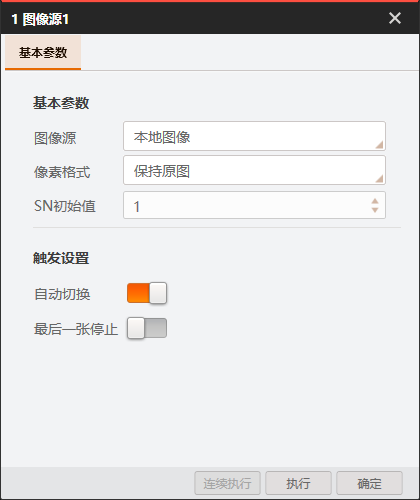
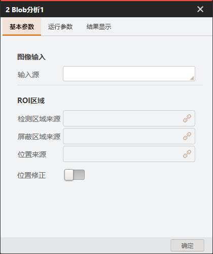
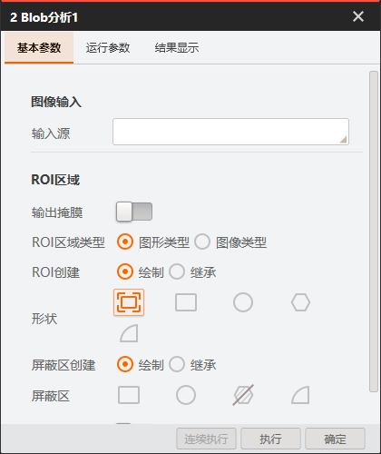
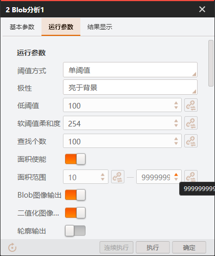
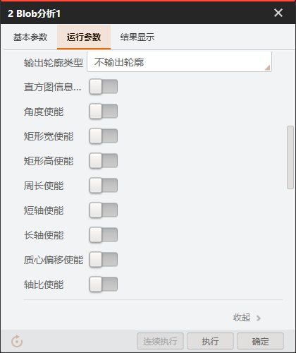
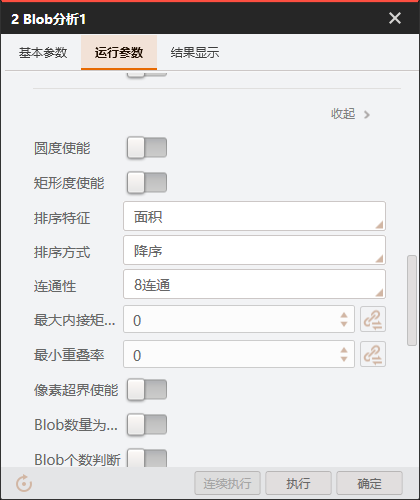
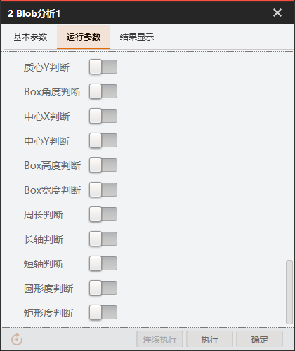
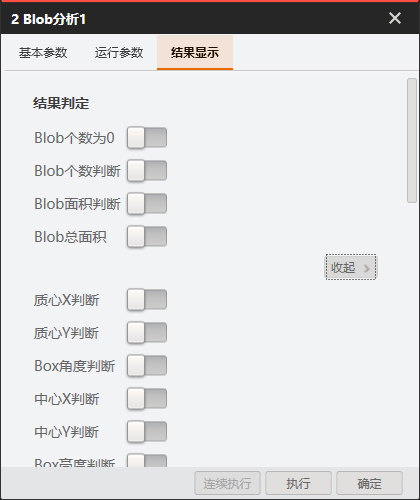
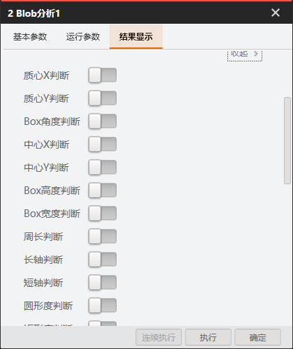
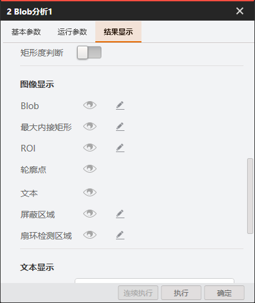
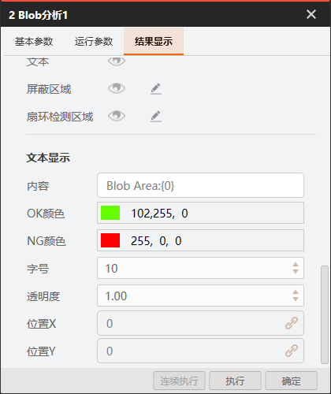
来源为 VisionMaster 4.4.0 工具调试窗口人工截图，用于 ImageSource 与 BlobAnalysis 的视觉组装基线。截图只证明可见结构和状态，不证明动态耗时。
| 文件 | 画面 |
|---|---|
| ImageSource-基本参数.png | |
| ImageSource-基本参数-重复.png |  |
| Blob-基本参数-折叠.png |  |
| Blob-基本参数-ROI.png |  |
| Blob-运行参数-上段.png |  |
| Blob-运行参数-中段.png |  |
| Blob-运行参数-下段.png |  |
| Blob-运行参数-判断.png |  |
| Blob-结果显示-上段.png |  |
| Blob-结果显示-中段.png |  |
| Blob-结果显示-图像显示.png |  |
| Blob-结果显示-文本显示.png |  |